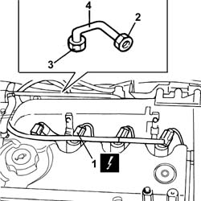
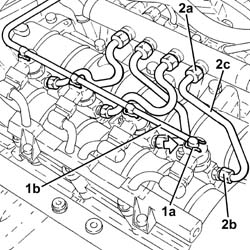
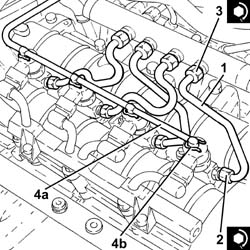

1060F36 lines to injectors - r r
- Path
- Procedures > 10 ENGINE > 1060 DIESEL FUEL INJECTION > 1060F injectors and lines > 1060F36 lines to injectors - r r
- Kind
- repair procedure (removal / refitting; the operation number is the code)
- Applies to
- engines: 1.9 JTD 8V, 1.9 JTD 16V; all production periods
- Interactive page
- https://sloeber94.github.io/elrnDB-a147/en/#/3025036
Applies to: engines: 1.9 JTD 8V; all production periods
 Removing
Removing
 Refitting
Refitting1016A10 sound-proofing cover - r + r
Disconnect the battery negative terminal.
1. Disconnect the electrical connections from the injectors.
 | Name | Connector |
|---|---|---|
1 | Injector |
2. Undo the connectors for the pipes from the injectors.
3. Undo the connectors of the pipes from the single fuel manifold.
4. Remove the fuel manifold and injector connection pipes.

Applies to: engines: 1.9 JTD 8V; all production periods
Refitting
RemovingFit new pipes from the manifold to the injectors.
Tighten the connectors on the pipes on the return manifold and injectors to torque.
 | Fastening | Component | Ø | Value (daNm) |
|---|---|---|---|---|
- | Connector | FUEL MANIFOLD LINE TO INJECTORS | M14 | (Fuel manifold side) 2.2 |
| Fastening | Component | Ø | Value (daNm) |
|---|---|---|---|---|
- | Connector | FUEL MANIFOLD LINE TO INJECTORS | M12 | (Injector side) 2.2 |
Connect the electrical connections to the injectors.
| Name | Connector |
|---|---|---|
- | Injector |
1016A10 sound-proofing cover - r + r
Connect the battery negative terminal.
Applies to: engines: 1.9 JTD 16V; all production periods
Removing
RefittingProceed with removal 1016A10 sound-proofing cover - r + r .
1. Push clips (1a) by hand and disconnect the pipe from the injectors to the fuel recovery manifold (1b), injectors side and move it aside.
2. Undo the connectors (2a), (2b) and remove the pipe from the fuel manifold to the injectors (2c).

Applies to: engines: 1.9 JTD 16V; all production periods
Refitting
Removing1. Fit the new pipes from the fuel manifold to the injectors and secure them using the connectors without tightening them.
2. Tighten the connectors for the pipes from the fuel manifold to the injectors, injector side, to the recommended torque using a suitable spanner.
| Fastening | Component | Ø | Value (daNm) |
|---|---|---|---|---|
2 | Connector | FUEL MANIFOLD LINE TO INJECTORS | M12 | (Injector side) 2.2 ÷ 2.4 |
3. Tighten the connectors for the pipes between the fuel manifold and the injectors, fuel manifold side to the recommended torque using a suitable spanner.
| Fastening | Component | Ø | Value (daNm) |
|---|---|---|---|---|
3 | Connector | FUEL MANIFOLD LINE TO INJECTORS | M12 | Fuel manifold side 22 24 |
4. Connect the pipe from the injectors to the fuel recovery manifold (4a) to the injectors pushing it until the clips (4b) can be heard clicking into place.

Applies to: engines: 1.9 JTD 16V; all production periods
Proceed with refitting 1016A10 sound-proofing cover - r + r .